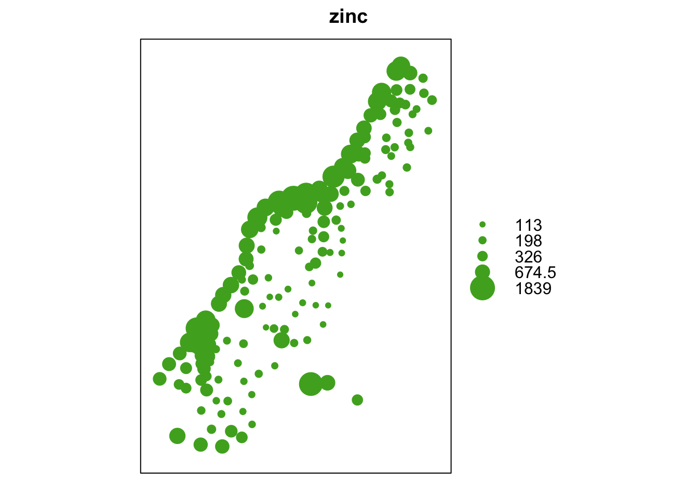
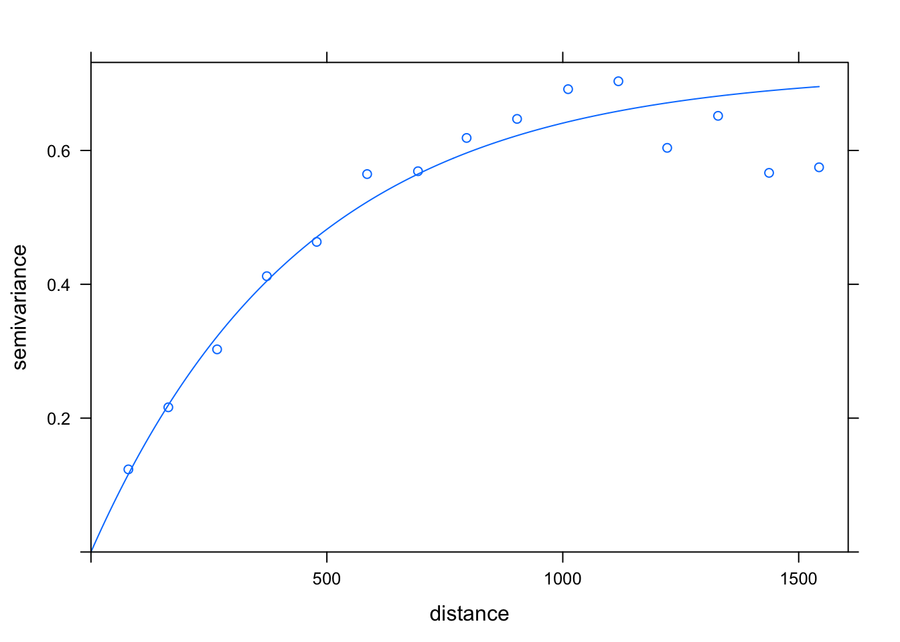
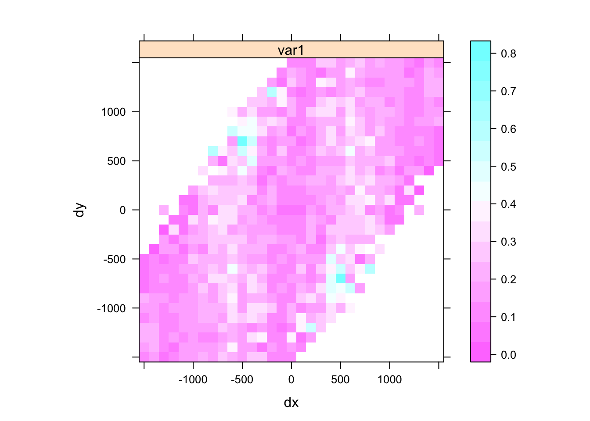

6 Day 6
6.1 Announcements
- Assigned reading: Model Selection for Geostatistical Models
6.2 Gaussian process assumptions
To fit a Gaussian process, we have to make assumptions
- Why? – The mean and covariance functions are infinite dimensional but we only observe a finite vector \(\mathbf{y} = (y(\mathbf{s}_1), \ldots, y(\mathbf{s}_1))'\) so we cannot fully specify the model
Stationarity
- Strict stationarity: the probability density function is invariant to shifts
- \([y(\mathbf{s}_1), \ldots, y(\mathbf{s}_n)] = [y(\mathbf{s}_1 + \mathbf{h}), \ldots, y(\mathbf{s}_n + \mathbf{h})] \hspace{1em} \forall \mathbf{s}_1, \ldots, \mathbf{s}_n \in \mathcal{D} \mbox{ and } \mathbf{h}\) (such that all points shifted by the vector \(\mathbf{h}\) are also in \(\mathcal{D}\))
- Weak stationarity: mean and covariance function are stationary
- \(E\left( y(\mathbf{s}) \right) = E\left( y(\mathbf{s} + \mathbf{h}) \right) = \mu \hspace{1em} \forall \mathbf{h}\)
- \(C\left( y(\mathbf{s}), y(\mathbf{s} + \mathbf{h}) \right) = C\left( y(\mathbf{0}), y(\mathbf{h}) \right) = C(\mathbf{h}) \hspace{1em} \forall \mathbf{s}, \mathbf{h}\)
- This implies \(C\left( y(\mathbf{s}_i), y(\mathbf{s}_j) \right) = C(\mathbf{s}_i - \mathbf{s}_j) = C(\mathbf{d}_{ij})\) where \(\mathbf{d}_{ij} = \mathbf{s}_i - \mathbf{s}_j\) is the difference vector between location \(\mathbf{s}_i\) and location \(\mathbf{s}_j\)
- Intrinsic stationarity (weakest form)
- \(Var\left( y(\mathbf{s} + h) - y(\mathbf{s}) \right)\) depends only on \(\mathbf{h}\).
- Note: intrinsic stationarity doesn’t imply weak stationarity.
- Example: Brownian motion is intrisically stationary but is not weakly stationary.
- Strict stationarity: the probability density function is invariant to shifts
Insert drawing here
- Can you think of a process that is not stationary?
Note: for Gaussian processes, a weak stationarity implies strong stationarity.
- Isotropy
- A covariance function is isotropic if it is invariant to direction and rotation.
- \(C\left( y(\mathbf{s}_i), y(\mathbf{s}_j) \right) = C(d_{ij})\) where \(d_{ij} = \|\mathbf{s}_i - \mathbf{s}_j\|\) is the distance (typically Euclidean) between \(\mathbf{s}_i\) and \(\mathbf{s}_j\)
- Can you think of examples where other distances (not Euclidean) might be better?
- A covariance function that is not isotropic is called anisotropic
Insert drawing here
- Can you think of a process that is anisotropic?
6.3 Recall Hierachical modeling
6.3.1 Data Model
\[\begin{align*} y(\mathbf{s}) & = z(\mathbf{s}) + \varepsilon(\mathbf{s}) \\ \tag{6.1} \varepsilon(\mathbf{s}) \stackrel{iid}{\sim} N(0, \sigma^2) \end{align*}\]
\(y(\mathbf{s})\) is the observation at site \(\mathbf{s}\)
\(z(\mathbf{s})\) is the process of interest at site \(\mathbf{s}\)
- \(\varepsilon(\mathbf{s}) \sim N(0, \sigma^2)\) is the measurement error
- Commonly called the nugget
- Geostatistics came from mining
- Microsite-variability
- What is a process that would have a small nugget?
- What is a process that would have a large nugget?
\(z(\mathbf{s})\) is the process of interest at site \(\mathbf{s}\)
Process Model (using Gaussian process)
\[\begin{align*} z(\mathbf{s}) & = \mu(\mathbf{s}) + \eta(\mathbf{s}) \tag{6.2} \end{align*}\]
\(\mu(\mathbf{s})\) is the GP mean function
\(\boldsymbol{\eta} = (\eta(\mathbf{s}_1), \ldots, \eta(\mathbf{s}_n))' \sim N(\mathbf{0}, \boldsymbol{\Sigma})\)
\(Cov(\eta(\mathbf{s}_i), \eta(\mathbf{s}_j)) = \tau^2 C(d_{ij})\)
\(C(d_ij)\) is a correlation function
\(\tau^2\) is often called the partial sill parameter
set.seed(101)
n <- 40
s <- runif(n)
## mean function
mu <- s
## covariance function -- this is positive definite
Sigma <- 2 * exp( - rdist(s) / 2)
## generate the spatially (1-d) correlated process
## rmvn returns a matrix -- use c() to coerce to a vector
eta <- c(rmvn(1, rep(0, n), Sigma))
z <- mu + eta
epsilon <- rnorm(n, 0, 0.25)
y <- z + epsilon
dat <- data.frame(
s = s,
y = y,
z = z,
mu = mu,
eta = eta,
epsilon = epsilon
)
dat %>%
ggplot(aes(x = s, y = y)) +
geom_point() +
geom_segment(aes(xend = s, yend = z), alpha = 0.5) +
geom_line(aes(x = s, y = z), color = "blue") +
geom_line(aes(x = s, y = mu), color = "red") +
geom_line(aes(x = s, y = eta), color = "purple") +
theme_bw()
A quick check if Sigma meets the conditions of a symmetric positive-definite matrix
## [1] TRUE## check is Sigma is posivitive definite
Sigma_eigen <- eigen(Sigma)
## check that all eigenvalues are positive
Sigma_eigen$values## [1] 68.614998226 6.469640157 1.846887044 1.013225060 0.526987113
## [6] 0.350879290 0.221671629 0.170657210 0.116756563 0.076631073
## [11] 0.067533590 0.058658782 0.053014720 0.043488483 0.037433411
## [16] 0.036668397 0.032544320 0.030261646 0.027404563 0.023218999
## [21] 0.021154516 0.021154380 0.017782847 0.016717572 0.014563450
## [26] 0.013423514 0.010922956 0.009497946 0.008886870 0.008231217
## [31] 0.007208472 0.005444425 0.005026785 0.004599434 0.004534839
## [36] 0.004238142 0.003219602 0.002366398 0.001348648 0.001117710## [1] TRUE- Variance decomposition
Combining the equations (6.1) and (6.2)
\[\begin{align*} y(\mathbf{s}) & = \mu(\mathbf{s}) + \eta(\mathbf{s}) + \varepsilon(\mathbf{s}) \end{align*}\]
we can have
\[\begin{align*} Var \left( y(\mathbf{s}) \right) & = Var \left( \mu(\mathbf{s}) + \eta(\mathbf{s}) + \varepsilon(\mathbf{s}) \right) \\ & = Var \left( \mu(\mathbf{s}) \right) + Var \left( \eta(\mathbf{s}) \right) + Var \left( \varepsilon(\mathbf{s}) \right) + \\ & \hspace{2em} 2 Cov \left( \mu(\mathbf{s}), \varepsilon(\mathbf{s}) \right) + 2 Cov \left( \mu(\mathbf{s}), \eta(\mathbf{s}) \right) + 2 Cov \left( \eta(\mathbf{s}), \varepsilon(\mathbf{s}) \right) \\ & = 0 + Var \left( \eta(\mathbf{s}) \right) + Var \left( \varepsilon(\mathbf{s}) \right) + 0 + 0 + 0 \\ & = \tau^2 + \sigma^2 \end{align*}\]
- the total variance is the sill \(\tau^2 + \sigma^2\)
6.3.2 Common isotropic correlation functions
- Tobler’s law of geography
- “Everything is related to everything else, but near things are more related than distant things”
- These functions follow Tobler’s law in that the function decays with distance
- These functions are proven to be symmetric and positive definite, thus are valid correlation functions
## make a function to plot the correlation functions
plot_corr_function <- function(corr_fun, ## notice that this input is a function
d = seq(0, 10, length.out = 1000),
phi = c(0.1, 0.5, 1, 5, 10),
title = NULL,
...) {
C_h <- matrix(0, length(d), length(phi))
for (i in 1:length(phi)) {
C_h[, i] <- corr_fun(d, phi[i], ...)
}
print(
data.frame(d = d, C_h = c(C_h), phi = factor(rep(phi, each = length(d)))) %>%
ggplot(aes(x = d, y = C_h, group = phi, color = phi)) +
geom_line() +
ylim(c(0, 1)) +
ggtitle(title)
)
}6.3.2.1 Exponential correlation function
\[\begin{align*} C(d) & = e^{- \frac{d}{\phi} } \end{align*}\]
where \(\phi\) is the spatial range parameter (called the length-scale in Gaussian process literature). Note that this function is not differentiable at 0.
exponential_cor <- function (d, phi, ...) {
return(exp( - d / phi))
}
plot_corr_function(exponential_cor, title = "Exponential correlation function")
Sometimes this is parameterized using the inverse spatial range \(\theta = \frac{1}{\phi}\)
\[\begin{align*} C(d) & = e^{- d\theta} \end{align*}\]
6.3.2.2 Squared exponential (Gaussian) correlation functions
\[\begin{align*} C(d) & = e^{- (\frac{d}{\phi})^2 } \end{align*}\]
Notice that this function is differentiable at 0.
gaussian_cor <- function (d, phi, ...) {
return(exp( - (d / phi)^2))
}
plot_corr_function(gaussian_cor,
title = "Gaussian (squared exponential) correlation function")
6.3.2.3 Powered exponential correlation functions
\[\begin{align*} C(d) & = e^{- (\frac{d}{\phi})^k } \end{align*}\]
powered_exp_cor <- function (d, phi, k, ...) {
return(exp( - (d / phi)^k))
}
plot_corr_function(powered_exp_cor, k = 1,
title = "Powered exponential correlation function, k = 1")
plot_corr_function(powered_exp_cor, k = 2,
title = "Powered exponential correlation function, k = 2")
plot_corr_function(powered_exp_cor, k = 3,
title = "Powered exponential correlation function, k = 3")
plot_corr_function(powered_exp_cor, k = 4,
title = "Powered exponential correlation function, k = 4")


For future classes (basis representations) Visual exploration of Gaussian Processes
6.3.2.4 Matern correlation functions
\[\begin{align*} C(d) & = \frac{2^{1 - \nu}}{\Gamma(\nu)} \left( \sqrt{2 \nu} \frac{d}{\phi} \right)^\nu K_\nu \left( \sqrt{2 \nu} \frac{d}{\phi} \right) \end{align*}\]
- \(\Gamma(\cdot)\) is the gamma function
- \(K_\nu(\cdot)\) is the modified Bessel function of the second kind
- \(\phi\) is the range parameter
- \(\nu\) is the smoothness parameter
## Use the Matern fucnction from the fields library
plot_corr_function(Matern, range = c(0.1, 0.5, 1, 5, 10), smoothness = 0.15,
title = "Matern correlation function, smoothness = 0.15")
plot_corr_function(Matern, range = c(0.1, 0.5, 1, 5, 10), smoothness = 0.5,
title = "Matern correlation function, smoothness = 0.5")
plot_corr_function(Matern, range = c(0.1, 0.5, 1, 5, 10), smoothness = 5,
title = "Matern correlation function, smoothness = 5")
plot_corr_function(Matern, range = c(0.1, 0.5, 1, 5, 10), smoothness = 50,
title = "Matern correlation function, smoothness = 50")


- Special Cases
- \(\nu = \frac{1}{2} \Rightarrow C(d) = e^{- \frac{d}{\phi} }\) is the exponential correlation function
- \(\nu = \frac{3}{2} \Rightarrow C(d) = \left(1 - \frac{\sqrt{3}d}{\phi} \right) e^{- \frac{\sqrt{3}d}{\phi} }\)
- \(\nu = \frac{5}{2} \Rightarrow C(d) = \left(1 - \frac{\sqrt{5}d}{\phi} + \frac{5 d^2}{3 \phi^2} \right) e^{- \frac{\sqrt{5}d}{\phi} }\)
- \(\nu \rightarrow \infty \Rightarrow C(d) = e^{- \frac{1}{2} \left( \frac{d}{\phi} \right)^2 }\) is the Gaussian correlation function
Note: these functions are valid in \(\mathcal{R}^2\). There are generalizations of the functions to other geometries (spheres, stream networks, etc.) and higher dimensions (\(\mathcal{R}^d\)).
The Gaussian process with a Matern correlation function with parameter \(\nu\) is \(\lceil \nu \rceil\)-1 times differentiable in the mean-square sense
d <- seq(0, 10, length = 1000)
nu <- c(1/2, 3/2, 5/2)
C_h <- c(
Matern(d, range = 1, nu = nu[1]),
Matern(d, range = 1, nu = nu[2]),
Matern(d, range = 1, nu = nu[3])
)
dat <- data.frame(
d = d,
C_h = C_h,
nu = factor(rep(nu, each = length(d)))
)
ggplot(dat, aes(x = d, y = C_h, group = nu, color = nu)) +
geom_line() +
ggtitle("Matern correlation functions")
## simulate some Gaussian processes
dat$y <- c(
rmvn(
1,
mu = rep(0, 1000),
sigma = Matern(rdist(seq(0, 10, length = 1000)), range = 1, nu = nu[1])
),
rmvn(
1,
mu = rep(0, 1000),
sigma = Matern(rdist(seq(0, 10, length = 1000)), range = 1, nu = nu[2])
),
rmvn(
1,
mu = rep(0, 1000),
sigma = Matern(rdist(seq(0, 10, length = 1000)), range = 1, nu = nu[3])
)
)
ggplot(dat, aes(x = d, y = y, group = nu, color = nu)) +
geom_line() +
ggtitle("Gaussian process realizations")

6.4 Covariograms and semivariograms
- How do we choose a covariance function?
- How do we fit a covariance function?
- How do we check for isotropy?
6.4.1 Semivariograms and variograms
- The semivariogram is defined
\[\begin{align*} \gamma(\mathbf{s}_i, \mathbf{s}_j) & \equiv \frac{1}{2} Var(y(\mathbf{s}_i) - y(\mathbf{s}_j)) \\ & E\left( \left( \left( y(\mathbf{s}_i) - \mu(\mathbf{s}_i) \right) - \left( y(\mathbf{s}_j) - \mu(\mathbf{s}_j) \right) \right)^2 \right) \end{align*}\]
If the covaraince is stationary this can be written as a function of directional spatial lags \(\mathbf{h}_{ij} = \mathbf{s}_i - \mathbf{s}_j\) (e.g., \(\mathbf{h}_{ij}\) is not required to equal \(\mathbf{h}_{ji}\)).
\[\begin{align*} \gamma(\mathbf{h}) & \equiv \frac{1}{2} Var(y(\mathbf{s} + \mathbf{h}) - y(\mathbf{s})) \\ & = \frac{1}{2} E\left( \left( \left( y(\mathbf{s} + \mathbf{h}) - \mu(\mathbf{s} + \mathbf{h}) \right) - \left( y(\mathbf{s}) - \mu(\mathbf{s}) \right) \right)^2 \right) \\ & \frac{1}{2} E\left( \left( y(\mathbf{s} + \mathbf{h}) - \mu(\mathbf{s} + \mathbf{h}) \right)^2 \right) - E\left( \left( y(\mathbf{s} + \mathbf{h}) - \mu(\mathbf{s} + \mathbf{h}) \right) \left( y(\mathbf{s}) - \mu(\mathbf{s}) \right) \right) + \frac{1}{2} E\left( \left( y(\mathbf{s}) - \mu(\mathbf{s}) \right) \right) \\ & = C(\mathbf{0}) - C(\mathbf{h}) \end{align*}\]
This implies \[\begin{align*} \gamma(\mathbf{h}) & = C(\mathbf{0}) - C(\mathbf{h}) \\ & \mbox{or} \\ C(\mathbf{h}) & = C(\mathbf{0}) - \gamma(\mathbf{h}) \end{align*}\]
- The variogram is defined as \(2 \gamma(\mathbf{h})\).
6.4.1.1 Properties of variograms
- \(\gamma(\mathbf{s}_i, \mathbf{s}_j) \geq 0\) because it is the expectation of a square
- \(\gamma(\mathbf{s}_i, \mathbf{s}_i) = \gamma_i(0) = 0\) because \(y(\mathbf{s}_1) - y(\mathbf{s}_1) = 0\)
insert theoretical variogram plot from class here that shows the curve, nugget, sill, and range
6.4.1.2 Estimation of variograms
It is difficult to estimate the variogram as there is no replication across space – need to pool information across space.
First, fit a model to the mean to estimate \(\hat{\mu}(\mathbf{s})\) (use maximum likelihood, least-squares, etc.)
- Next, generate a sequence of bins based on distance and group each pair of points \((\mathbf{s}_i, \mathbf{s}_j)\) into a bin
- Example bins: [0, 1), [1, 2), [2, 3)
Place the pair of observations \(\mathbf{s}_i\) and \(\mathbf{s}_j\) into respecitve bins.
Calculate the average of the variogram within each bin For each of the \(k\) bins that have \(m_k\) points in each bin, the variogram estimate for bin \(k\) centered at the bin interval \(\mathbf{h}_k\) is
\[\begin{align*} \hat{\gamma}(\mathbf{h}_k) = \frac{1}{m_k} \sum_{\ell=1}^{m_k} \left( y(\mathbf{s}_{\ell_1}) - y(\mathbf{s}_{\ell_2}) \right) \end{align*}\]
for the \(\ell\)th pair of locations \(\mathbf{s}_{\ell_1}\) and \(\mathbf{s}_{\ell_2}\)
insert empirical variogram plot from class here
6.4.1.3 Directional variograms
Using the meuse dataset of heavy metal concntrations in the topsoil near the Meuse river near Stein, NL, we can explore the concentration of zinc (log-scale).

Let’s explore the correlation in the data with respect to the log(zinc) variable
dir_variogram <- variogram(log(zinc) ~ 1, data = meuse, alpha = c(0, 45, 90, 135))
fit_variogram <- fit.variogram(dir_variogram, model = vgm(1, "Exp"))
plot(dir_variogram, fit_variogram, as.table = TRUE)
You can explore this variogram as a map
map_variogram <- variogram(log(zinc) ~ 1, data = meuse,
cutoff = 1500, width = 100, map = TRUE)
plot(map_variogram, threshold = 5)
which appears to show some patterns in the variogram maps suggesting anisotropy. Perhaps there is a covariate that can explain this. Let’s use the square-root distance to the river

Now, we can look at the directional varigrams of the residuals in the model after accounting for square-root distance to the river
dir_variogram <- variogram(log(zinc) ~ sqrt(dist), data = meuse, alpha = c(0, 45, 90, 135))
fit_variogram <- fit.variogram(dir_variogram, model = vgm(1, "Exp"))
plot(dir_variogram, fit_variogram, as.table = TRUE)
where these variograms seem to fit the data better. You can explore this variogram as a map
map_variogram <- variogram(log(zinc) ~ sqrt(dist), data = meuse,
cutoff = 1500, width = 100, map = TRUE)
plot(map_variogram, threshold = 5)
which shows that after modeling log(zinc) as a function of the square-root distance to the river, the residuals appear isotropic left in the residuals.